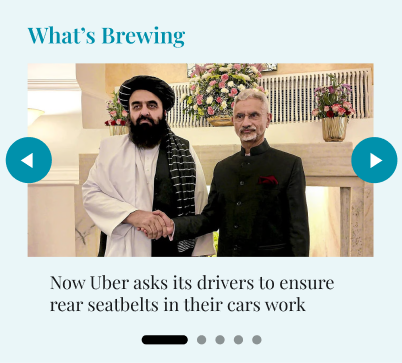
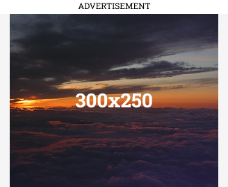

Dhaka Assembly Election 2025
District: Purvi Champaran
Seat Type: General
The Bihar Assembly elections are underway. Follow this page for constituency-wise context, key candidates, and background ahead of the 2025 results. We’ll update this section with quick takeaways as trends emerge.
Note: Past results and party colors are based on publicly available records. Turn the ‘Results announced’ toggle on when official 2025 results are declared to see updated summaries.
Dhaka Current MLA
Pawan Jaiswal
Bihar Assembly Elections Dhaka Past Results
2010
Pawan Kumar Jaiswal
IND
GAIN
2015
Faisal Rahman
RJD
GAIN
2020
Pawan Jaiswal
BJP
GAIN
2025
Winner
WP
← Timeline can be scrolled horizontally →
Bihar Elections 2020 Results
WINNER: Pawan Jaiswal
Bharatiya Janata Party • 99,792 votes
Runner-up: Faisal Rahman
Rashtriya Janata Dal • 89,678 votes
MARGIN: 10,114 votes
Bihar Elections 2015 Results
WINNER: Faisal Rahman
Rashtriya Janata Dal • 87,458 votes
Runner-up: Pawan Kumar Jaiswal
Bharatiya Janata Party • 68,261 votes
MARGIN: 19,197 votes
Bihar Elections 2010 Results
WINNER: Pawan Kumar Jaiswal
Independent • 48,100 votes
Runner-up: Faisal Rahman
Janata Dal (United) • 46,451 votes
MARGIN: 1,649 votes

